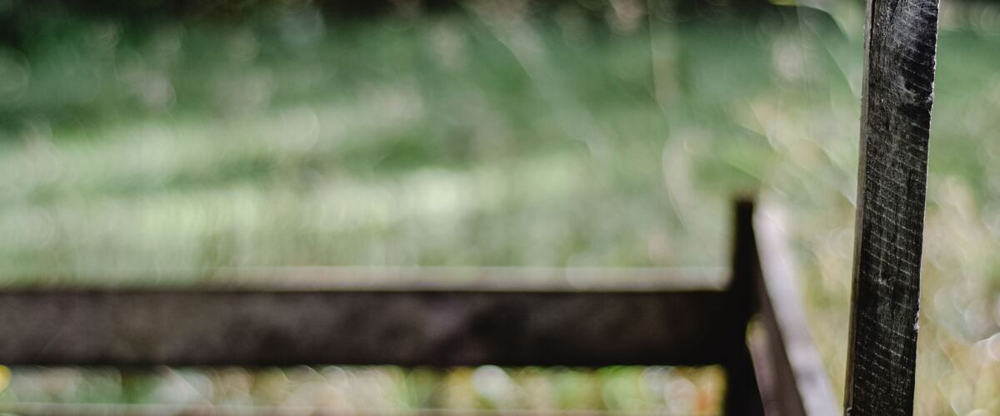

Beds, soil and water · Oregon · Washington · Idaho
Making Compost in a Rainy Northwest Garden
Wet winters and dry summers both make home compost harder. How to build a pile that breaks down here, what to put in, and how to fix one that's slimy or stuck.
Compost is decomposed plant material that feeds soil life, loosens clay, helps sandy soil hold water and slowly releases nutrients. Almost every bed on this site starts with "mix in an inch or two of compost." Making your own is cheap and uses up kitchen scraps and garden waste, but the Northwest's weather makes it a little different from the textbook. West of the Cascades, piles get soaked all winter. East of the Cascades, they dry out all summer.
Greens, browns, air and water
A compost pile needs four things in balance:
- Greens are fresh, moist and rich in nitrogen: vegetable scraps, coffee grounds, fresh grass clippings, green plant trimmings.
- Browns are dry and carbon-rich: fallen leaves, straw, shredded cardboard and paper, wood chips in small amounts.
- Air, because the microbes that make good compost need oxygen. Without it, a pile turns slimy and sour.
- Water, about as damp as a wrung-out sponge.
A rough rule is two to three buckets of browns for every bucket of greens. You don't need to measure: if the pile smells bad, add browns; if nothing is happening, add greens and water.
What to leave out
- Meat, fish, bones and dairy, which attract rats, raccoons and dogs.
- Diseased plants, such as tomatoes with late blight, and weeds that have gone to seed. A home pile rarely gets hot enough to kill them, so bag them for the yard-waste bin.
- Pet waste from dogs and cats, and charcoal ashes.
- Roots of spreading weeds like bindweed and quackgrass, which can resprout.
West of the Cascades: keep the rain off
A wet Northwest winter can turn an open pile into a cold, soggy, smelly mass. The fix is simple:
- Use a lid or a cover. A closed bin, or a tarp over a heap, keeps out the worst of the rain. Lift it during dry spells if the pile needs moisture.
- Add extra browns in winter. Store a few bags of fall leaves next to the bin. Every time you add kitchen scraps, cover them with a layer of leaves. It soaks up excess water and stops smells.
- Put the bin on soil, not concrete, so extra water drains away and worms can move in.
- Expect slow going. Piles barely work through cold winter months. They pick up again in spring, so don't worry if nothing seems to change from November to March.
East of the Cascades: keep the water in
In the drier summers of eastern Oregon and Washington and southern Idaho, the opposite happens: piles dry out and stop. Water the pile when you water the garden, soak dry browns before adding them, and choose a shady or partly shaded spot. A closed bin or a covered pile holds moisture far better than an open heap.
Turning and timing
Turning the pile with a fork every few weeks mixes in air and speeds things up, and a well-tended pile can be ready in a few months. A pile you never turn still becomes compost, but it can take a year or more. Either works; it's a trade between your time and the pile's.
Compost is ready when it's dark, crumbly and smells like earth, and you can't pick out most of what went in. Sift out any lumps and toss them back in the bin to finish.
Fixing a pile that isn't working
- Smells rotten or looks slimy: too wet or too many greens. Mix in dry leaves or shredded cardboard and turn it.
- Dry and not breaking down: too dry or too many browns. Water it as you turn it and add fresh greens.
- Fruit flies: bury fresh scraps under a few inches of browns.
- Rats or raccoons: stop adding cooked food, keep scraps buried, and use a bin with a lid and a wire mesh bottom.
Using it
Spread an inch or two over beds in spring or fall and work it lightly into the top few inches, mix it into planting holes for vegetables and flowers, or use it as a thin mulch. It's especially useful in raised beds, where the soil level drops each year, and around hungry crops like tomatoes and squash. Fallen leaves on their own make a different, slower product; see turning fall leaves into leaf mold.